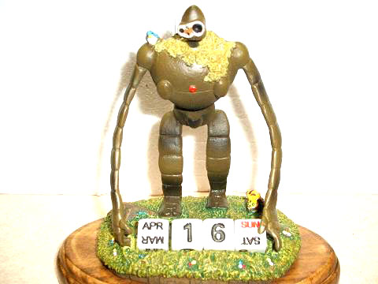
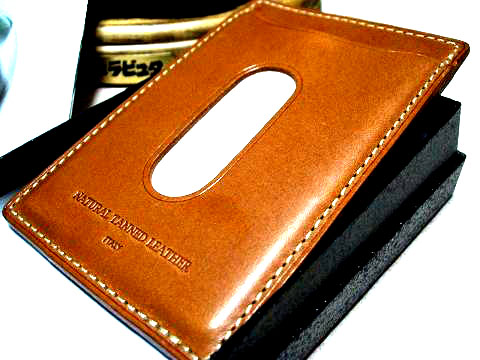

日々、想ふ
〜過去感じたことがつれづれと〜
（できるだけ最大化してお読みください）
日々、想ふ
まとめたら。４/２９・３０
土曜日と
日曜日とで
２０時間
タケユキです。
俺けっこう働いてます。
今日のバイト：濃い。
まとめて。４/２７・２８
忍耐と
気合だけで
作業中
タケユキです。
実験データ作成で夜遅くまで学校。
頭をそれほど使わない作業で時間のかかるもの、
頭を使うが時間がかからないもの、
どっちが楽？
今日の昼ごはん：ぼったくりサラダバー。
ラーメン。４/２６
研究室でも
ラーメン巡り
やってます
タケユキです。
というわけで晩ご飯に研究室の人達で
吹田キャンパスからちょっと走ったとこのラーメン「
五大力」
に行きました。
ここはちょっと変わっててミネストローネラーメンだとか
イタリアンチックなラーメンがあったりします。
イタリアンチックなんですよ、ラーメンなのに。
ラーメン、中華なのに・・。
味はよかったので機会があれば一度お試しあれ。
今日の天気：雨降らなくて何より。
日差し。４/２５
レストラン
「ひだまり」にて
昼食を
タケユキです。
吹田キャンパスレストラン「ひだまり」で昼ごはんを食べました。
でもあんまり日当たりがよくありませんでした。
今日のC++：ちょっと理解。
卯月。４/２４
７時８時
そんな帰宅が
当たり前？
タケユキです。
研究が正式に始まったわけではないんだけど
研究室を出てバイクにまたがったのがなぜか夜８時。
少しなあなあ感も出てきつつあったので少し気をひきしめていきたい。
四月ももうあと一週間。
今日の晩御飯：カツどん(カツなし)。
気分転換。４/２３
空港が
近いとたまに
いいかもよ
タケユキです。
今日は午後に空いた時間ができたので近所の伊丹空港へ。
いつもは
離陸が見れる公園の方へ行くんだけど
今回は家から少し南の着陸が見えるところへ。
でかっ。
いつも行く公園よりも飛行機がだいぶ近くに。
たまにはこっちの方もいいかも。
今日の一日：久しぶりにすっきり。
だってかわいいし。４/２１・２２
歯医者さん
受付の人が
楽しみで
タケユキです。
土曜日の受付の人がかわいくて
予約が朝９時からしかとれないって言われても
よろこんで予約して行ってきました。
週一回の楽しみがこれ。
まぁそういう時もある。
今日の天気：雨が降るのか降らんのか。
はぁ。４/２０
６時間
カタカタやって
進度ゼロ
タケユキです。
１時間に一回以上終了するエディタを使ってまして、
一度以上終了したらバックアップデータもすべてあぼーんになる
腐ったようなエディタでして。
結局完成直前までこぎつけてあぼーんの繰り返し。
明日もこれかな・・ふう。
今日のバイト：眠くてたまらん。
音のない生活。４/１９
でかけるも
iPOD忘れて
耳さみし
タケユキです。
学校に行ったんだけどiPOD忘れてしまい
作業中ずっと無音。
でかける時は常になにかしら音楽聴いてるものなので
すごい違和感でした。
明日こそは忘れずいこう。
今日の学校：夜遅く。
むむ。４/１８
今度から
飲み会とかの
幹事役
タケユキです。
研究室の歓迎会がありまして石橋で飲み会。
これで確か３度目の自己紹介。
そろそろ覚えてもらえたんではなかろうかと。
この飲み会から研究室のイベント係っていう係を引き継ぎました。
要するに研究室での飲み会とか宴会の幹事をやる係。
がんばっていこうかと、
思ったんだけどこれじゃあ飲み会で潰れても寝ることできんのね。。orz
・・がんばりましょうか。
今日の：眠いですよ
あれま。４/１７
一週間
洗濯せんくて
パンツなし
タケユキです。
いろいろ忙しくて洗濯する暇なく一週間ばかし過ぎたら
今日はこうと思ったらパンツがありませんでした。
こんな日もあっていいんじゃないですか。
というわけで今日は午後から研究室へ重役出勤。
明日は歓迎会だ。
今日の洗濯物：多すぎて干しきれず
生まれた日。４/１４〜１６
２２歳
年はそうでも
心は１７
タケユキです。
というわけで１６日で２２歳になりました。
とりあえず山は越えたもののまだ少し忙しい日々が続きそうです。
今日のもらったもの：↓

